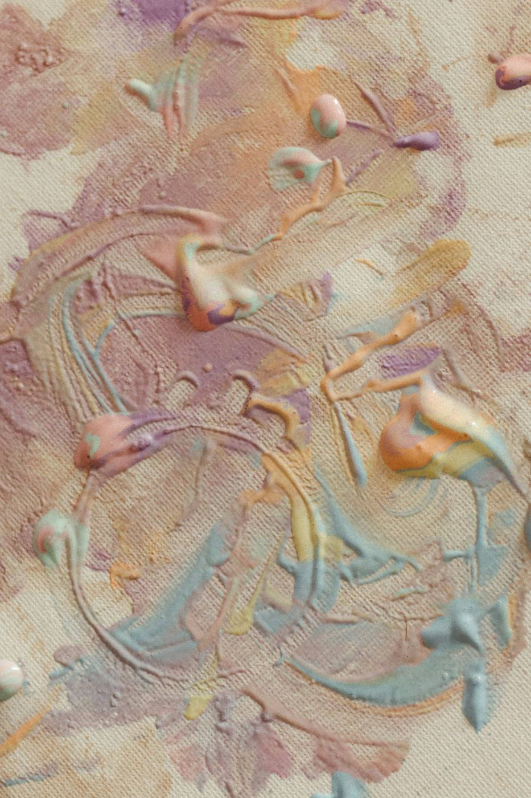
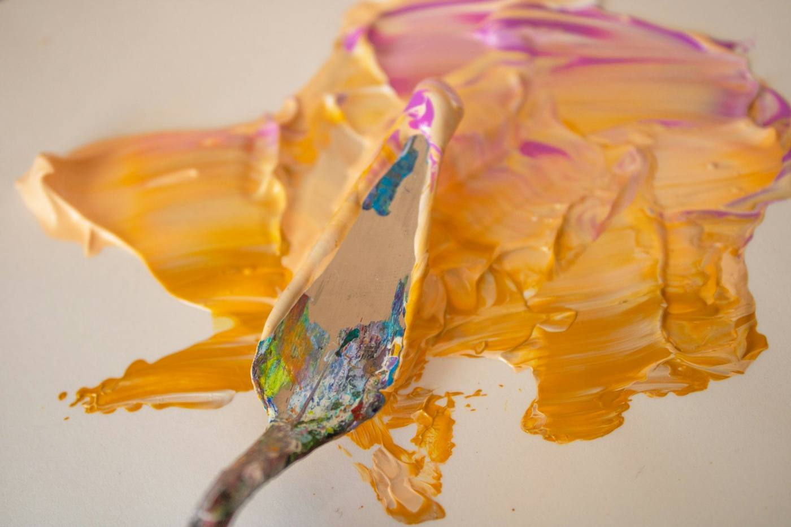

Nie każda historia wymaga słów.
Niektóre znajdują swój wyraz w sztuce.
Przesuń palcem — zobacz fakturę

O mnie
Obrazy, które chce się dotknąć
Maluję obrazy, które chce się dotknąć.
Pracuję szpachlą i pędzlem, warstwa po warstwie, aż farba zacznie rzucać własny cień. Tworzę obrazy strukturalne i klasyczne płótna — pejzaże, abstrakcje, światło. Każdy powstaje ręcznie, w jednym egzemplarzu.
Galeria
Prace
Z bliska
Farba ma grubość
Zbliżenia trzech prac. Dopiero z bliska widać, jak szpachla zostawia grzbiety, a pasta — miękkie fale, w których zbiera się cień.



Proces twórczy
Cztery kroki do obrazu
 1
1Płótno
Zaczynam od czystego płótna i szkicu w głowie, rzadko na papierze.
 2
2Narzędzia
Szpachle, pędzle, pasta strukturalna. Każde narzędzie zostawia inny ślad.

3Warstwy
Nakładam farbę grubo, warstwa po warstwie. Część musi schnąć kilka dni.
 4
4Światło
Na końcu sprawdzam obraz w bocznym świetle — dopiero wtedy widać fakturę.
Kontakt
Napisz
Chcesz zapytać o obraz albo zamówić pracę na wymiar? Napisz.
- kontakt@skart.pl
- @skart.art